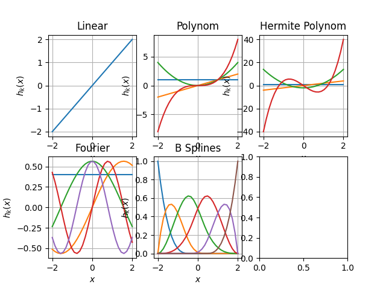

Note
Go to the end to download the full example code
Functional set¶
In this example, we present a subset of implemented functions.
import numpy as np
import matplotlib.pyplot as plt
import folie.functions as ff
import folie as fl
from scipy.interpolate import splrep
x_range = np.linspace(-2, 2, 30).reshape(-1, 1)
domain = fl.MeshedDomain.create_from_range(np.linspace(-2, 2, 6))
t, c, k = splrep(x_range, x_range**4 - 2 * x_range**2 + 0.5 * x_range)
fun_set = {
"Linear": ff.Linear(domain=domain),
"Polynom": ff.Polynomial(3, domain=domain),
"Hermite Polynom": ff.Polynomial(3, np.polynomial.Hermite, domain=domain),
"Fourier": ff.Fourier(order=2, freq=1.0, domain=domain),
"B Splines": ff.BSplinesFunction(domain=domain, k=3),
}
fig_kernel, axs = plt.subplots(2, 3)
m = 0
for key, fun in fun_set.items():
axs[m // 3][m % 3].set_title(key)
axs[m // 3][m % 3].set_xlabel("$x$")
axs[m // 3][m % 3].set_ylabel("$h_k(x)$")
axs[m // 3][m % 3].grid()
y = fun.grad_coeffs(x_range)
for n in range(y.shape[1]):
axs[m // 3][m % 3].plot(x_range[:, 0], y[:, n])
m += 1
plt.show()
Total running time of the script: (0 minutes 0.256 seconds)